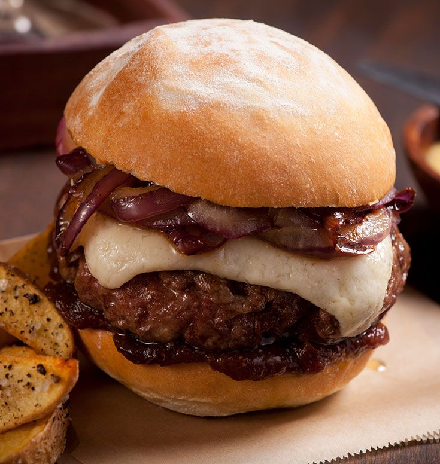

Truffle Wagyu Burgers

Description
This wagyu burger recipe, from Truffle Shuffle SF is for the juiciest
wagyu burger, you’ll ever sink your teeth into. In 10 minutes or less
enjoy a restaurant quality gourmet burger from the comfort of home.
Ingredients
- 1 pound (450g) ground wagyu beef
- 4 oz (100g) Cowgirl Creamery cheese & truffle mix
- 2 La Boulangerie brioche buns
- 1 jar Chef Darryl Bell’s 816 BBQ Sauce
- 1 oz (30g) Butter
- 1 oz (30ml) Canola Oil
- 1 Sweet onion
- 1 oz (30ml) of Apple Cider Vinegar
- 1 teaspoon (7 grams) of Honey
- 2 teaspoons (10g) of Balinese Truffle Salt
Steps
-
Remove the wagyu beef from package and form two 8 oz hamburger patties
- Peel the sweet onion and cut into julienne
-
Take half of the butter and melt in a saute pan over medium-high heat.
Sprinkle a little canola oil over.
-
Add julienned onions into pan and cook over medium-high heat, stirring,
until caramelized
-
Season the onions with truffle salt, add the vinegar and honey and cook
over medium heat until jammy. Season with Truffle Salt. Set aside.
-
Heat another saute pan over high heat and add the rest of the canola
oil. Heat until the oil begins to smoke
-
Add the wagyu burger and cook until brown for about 2 minutes. Flip the
burger and cook for another 2 minutes until medium rare. Clean the pan.
- Turn on the broiler.
-
Remove the wagyu burgers from the pan and place on a cooking sheet.
-
Top the patties with Cowgirl Creamery cheese and truffle mix and place
under the broiler until cheese is melted. About 2 minutes.
-
Heat the clean pan over medium heat. Slice the buns in half and butter
each side. Place the buns in the pan and toast until golden brown.
-
Plate the bun, top with the burger, add the caramelized onions, cover
with Chef Darryl’s BBQ sauce.
- Devour and relish!